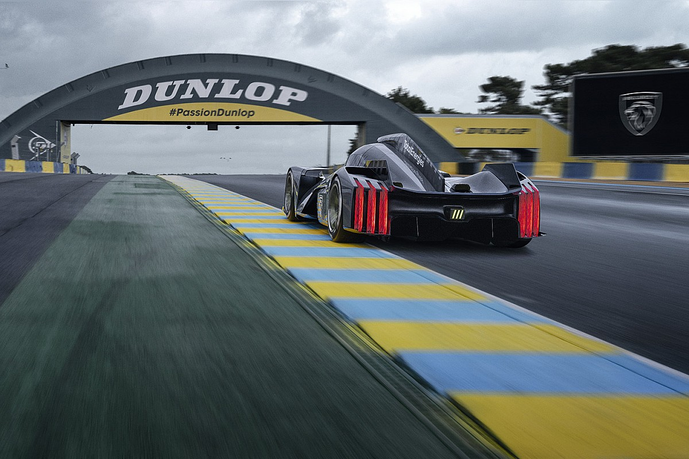

En la era moderna del WEC, Toyota Gazoo Racing ha sido el equipo dominante.
Han logrado múltiples victorias en las 24 Horas de Le Mans y han demostrado una feroz competencia contra rivales como Porsche y Audi.
El Campeonato Mundial de Resistencia (WEC, por sus siglas en inglés, World Endurance Championship)
es una de las competiciones más emocionantes y desafiantes del automovilismo deportivo.
Este campeonato global pone a prueba tanto la habilidad de los pilotos como la ingeniería de los fabricantes en carreras de resistencia que abarcan distancias largas y condiciones variadas.
El WEC tiene sus raíces en la rica historia de las carreras de resistencia, que se remontan a principios del siglo XX.

Sin embargo, el campeonato moderno tal como lo conocemos hoy en día se estableció en el año 2012,
cuando la Federación Internacional del Automóvil (FIA) fusionó la Copa Intercontinental Le Mans y la serie de resistencia de la FIA para crear el Campeonato Mundial de Resistencia.
Desde su inicio, el WEC ha atraído a los mejores equipos y pilotos de todo el mundo para competir en una serie de eventos emblemáticos, incluyendo las legendarias 24 Horas de Le Mans, que es el punto culminante de la temporada y una de las carreras más prestigiosas del automovilismo.

El campeonato presenta una variedad de clases de competición, desde los prototipos de tecnología avanzada hasta los deportivos de producción,
lo que ofrece una emocionante variedad de carreras y desafíos para los participantes y los aficionados por igual.
Con su enfoque en la resistencia, la estrategia y la habilidad de conducción, el WEC continúa siendo una plataforma emocionante para la innovación en el automovilismo y una fuente de emociones intensas para los entusiastas de las carreras en todo el mundo.